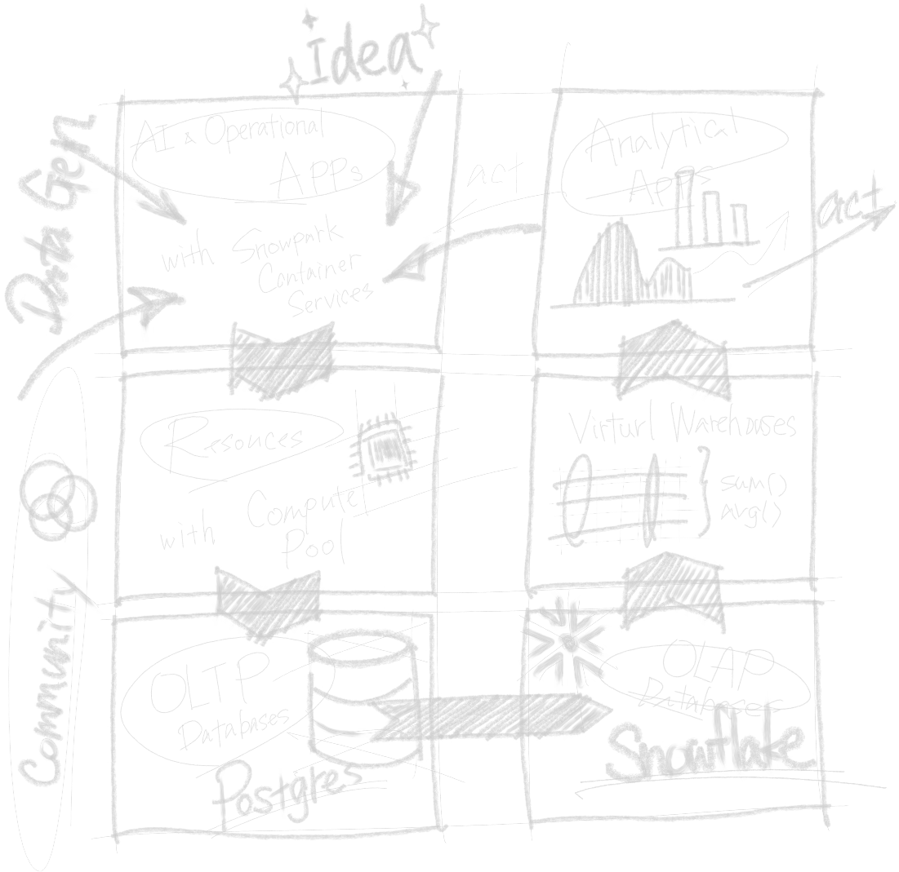
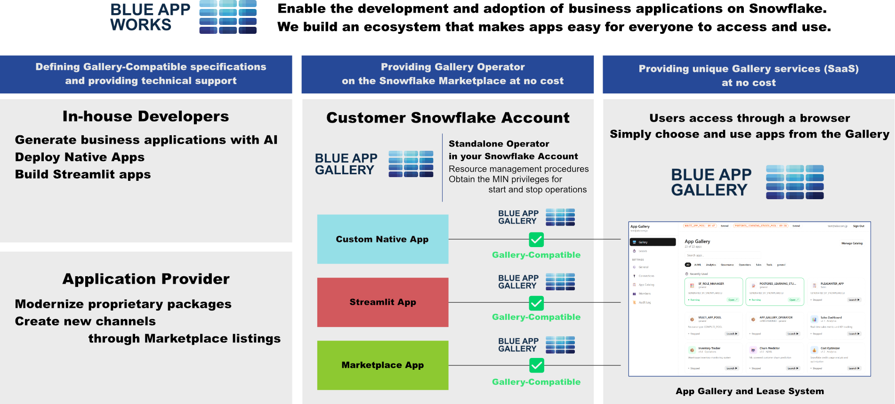

Blue is the color of Snowflake. The color of PostgreSQL.
The color of curiosity, where ideas come to life.
We deliver the ideas that turn ideas into reality.
Snowflake has evolved far beyond a data analytics platform.
Blue App Works envisions a new way to use it — as the runtime
for deploying, distributing, and managing business applications.

Your existing Snowflake environment becomes the runtime for business apps.
A place to realize ideas, and the starting point of a new data utilization cycle.
Snowflake Postgres and Native Apps make this possible. Build the apps you need
and run them safely — without worrying about infrastructure.
AI-generated apps are thriving, but there's also a wealth of proven business
applications built over decades in the on-premises era.
Discover high-quality apps from domain experts on the Snowflake Marketplace,
and combine them with your accumulated data to optimize operations.
Now available for free
Business users don't need Snowflake expertise or server management skills.
Blue App Works provides an app gallery service where you can "lease" middleware only when you need it.
No expensive SaaS contracts. No complex infrastructure platforms for your apps.
* Initial setup by a Snowflake administrator is required. Please confirm the security posture before internal rollout.
Generative AI has dramatically lowered the barrier to building apps. But between "building" and "being used across the organization," a significant gap remains.
There's no way to scale apps from one person to a team, department, or entire organization. Ideas stay trapped on individual desktops.
Snowflake permissions require expert knowledge. Every time a user wants to launch an app, admin intervention is needed — unsustainable for daily operations.
Apps spring up across departments with no visibility. Version control becomes ad-hoc, and governance breaks down.
No complex infrastructure setup needed. If you have a Snowflake account, you can start right away.

Search for Blue App Gallery on the Snowflake Marketplace and install with one click. If you have a Snowflake account, you can start today.
Admins grant minimal permissions to Gallery. Register existing apps or AI-generated apps, and they become accessible to all users instantly.
Users simply browse the Gallery and click to launch apps. No permission complexity. Organization-wide rollout is just an admin action away.
During our beta period, Blue App Gallery and Blue App Gallery Operator are available completely free of charge.
If you're looking to establish Snowflake Marketplace as a new distribution channel for your business applications, let's talk. We aim to support partners from Snowflake Native Apps development to listing and promotion.
Contact Us →This project began as a proof-of-concept for using Snowflake as a runtime for business applications. Having more users is our greatest momentum. We may accept donations in the future for infrastructure costs.
If this project resonates with you, your support — whether through usage or contribution — would mean the world to us.
Building organizations where ideas get used.
In the DX era, companies, departments, and individuals are increasingly turning workflow improvement ideas into apps. Thanks to generative AI, the barrier to "building" has dropped dramatically.
But the real challenge lies in "runtime infrastructure" and "organizational adoption." Blue App Works uses Snowflake as the runtime to support the entire journey — from app creation to organization-wide usage.
No expensive SaaS contracts. No complex low-code tools. Maximize your Snowflake investment, and ensure apps don't just get built — they get used.
Experience Blue App Gallery in a demo environment first. We'd love to hear from you.